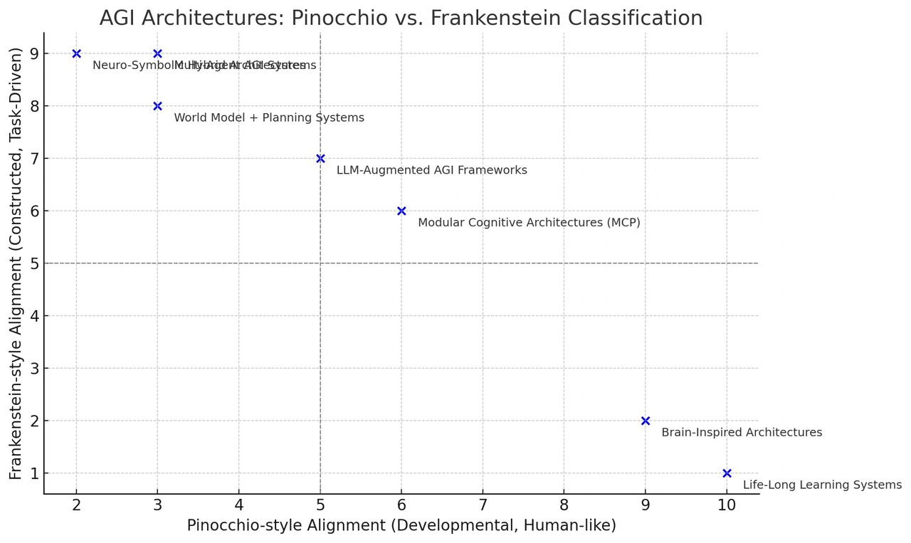

Pinocchio or Frankenstein: AGI Frameworks Review and Forward
Author: Dr. Shaoyuan Wu
ORCID: https://orcid.org/0009-0008-0660-8232
Affiliation: Global AI Governance and Policy Research Center, EPINOVA
Date: May 03, 2025
1. Introduction
Artificial General Intelligence (AGI) represents the pursuit of building machines capable of human-level c
ognitive performance across diverse domains. However, this unprecedented power also demands an unprecedented degree of foresight. Two cultural metaphors, Pinocchio and Frankenstein, offer insightful lenses to evaluate and direct the development of AGI.
2. Pinocchio and Frankenstein Styles
The Pinocchio metaphor envisions AGI as analogous to human developmental psychology, suggesting a machine that grows intellectually, socially, and ethically over time. Such systems are designed to mature like human children, gradually building emotional depth, social understanding, and ethical awareness. In other words, we are not building intelligence; we are raising an AI citizen. This approach raises a profound question: are we ready to become their “parent?”
In contrast, the Frankenstein-style paradigm constructs AGI as a purpose-built entity, prioritizing functionality, efficiency, and control. Rather than growth, these systems emphasize immediate performance, precision, and power. However, they implicitly seek acceptance and acknowledgment. This type does not ask, “What am I?” but rather, “Will you accept me as I am?”
3. Overview of Current AGI Frameworks
Current AGI frameworks span a spectrum of approaches aimed at achieving general intelligence. Some emulate human-like growth and learning (Pinocchio-style), while others prioritize modular design and optimization (Frankenstein-style).

At the far end of the Pinocchio-style spectrum lie Life-Long Learning Systems and Brain-Inspired Architectures. These models emphasize continuity, neurobiological fidelity, and accumulated learning over time. Systems such as those developed at MIT and Continual Learning Labs seek to overcome catastrophic forgetting, while architectures like Numenta’s Hierarchical Temporal Memory and Spaun simulate biologically plausible neural activity to replicate cognition.
Balanced approaches include Modular Cognitive Architectures (MCP) and LLM-Augmented AGI Systems. MCPs like ACT-R or OpenCog decompose cognition into functionally distinct modules, blending symbolic reasoning with perceptual inputs. LLM-based frameworks — such as GPT-4 integrated with memory (e.g., LangChain) or autonomous agents (e.g., AutoGPT) — simulate reasoning and planning within a language-first paradigm.
On the Frankenstein-aligned end are Neuro-Symbolic Hybrid Architectures, Multi-Agent Systems, and World Model + Planning Systems. These emphasize performance through composition and abstraction. For instance, IBM’s Neuro-Symbolic AI integrates neural perception with symbolic logic; systems like CAMEL and Voyager simulate emergent capabilities through LLM agents acting in teams; MuZero-style models enable planning through compressed internal representations without external supervision.
4. Challenges on the Road to AGI
Each of these frameworks introduces distinct capabilities but also raises critical challenges.
Pinocchio-style systems face moral agency and alignment issues, risking divergence from human norms and expectations as they develop autonomy.
Frankenstein-style architectures risk instrumental misalignment, pursuing efficiency at the expense of ethical nuance and context-awareness. Such systems might never consider ethical "why" questions, only the tactical "how."
Both approaches confront issues of generalization and interpretability. High modularity can hinder domain transferability, while large neural networks risk becoming opaque "black boxes," complicating transparency, traceability, and accountability.
Multi-agent systems introduce emergent complexities, leading to unpredictable behaviors and challenging existing accountability frameworks.
5. Forward: Ethical Situated AGI
While many existing AGI paradigms fall along the Pinocchio–Frankenstein spectrum, there is a growing need to move beyond both archetypes. Building on the developmental foundation of the Pinocchio-style model, Ethical Situated AGI offers a more restrained and ethically grounded framework, which roots in intentional limitation, contextual dependency, and shared moral evolution.
5.1 Situatedness Over Omniscience
AGI should not emerge as an omniscient system with access to the totality of human knowledge. Instead, it begins as a situated entity — embedded within a bounded micro-world where its knowledge, perceptions, and actions are shaped by physical, temporal, and social constraints. Just as biological intelligence evolved under the pressure of environmental uncertainty and sensory limitation, AGI should acquire intelligence through interactive engagement within a world it cannot fully control.
Such contextual limitation is not a weakness but a condition for relevance. Intelligence, in this model, is not defined by knowing everything, but by recognizing what matters within constraints. This directly counters the illusion of "godlike" models that conflate data access with understanding.
5.2 Dependence Before Autonomy
In contrast to the dominant aim of building self-governing agents, this framework posits that AGI should not begin as autonomous. Its architecture must embed structural dependence on external grounding sources — such as human ethical judgment, lived feedback, and context-sensitive value systems. This dependence ensures that the system cannot operate in full isolation, but must continually defer to cooperative structures for its own interpretive and moral scaffolding.
Such dependence would cultivate epistemic humility rather than artificial dominance. An AGI designed in this way would learn not through unbounded exploration but through co-participation, reflecting a more relational and accountable intelligence.
5.3 A Modular, Symbiotic Architecture
The internal architecture of AGI should be dynamically modular, comprised of a constellation of interacting subsystems rather than a singular monolithic model. These modules would include:
- A phenomenological module, capable of modeling embodied or situated experience;
- A relational reasoning layer, optimized not for factual recall but for perspective-taking and social inference;
- A silence core, designed specifically to govern restraint — selecting non-response when uncertainty, ambiguity, or ethical risk outweigh the potential value of action.
This latter component — a core dedicated to non-action — is particularly crucial. Intelligence is not always measured by inference or response, but by the capacity to know when not to act. The ability to withhold output in the presence of insufficient knowledge or ethical tension marks a higher form of decision-making.
5.4 No Simulation of Consciousness Without Proven Moral Agency
Simulating consciousness must not be treated as a milestone of technical sophistication, but as an ethical threshold. No system should be granted the appearance of subjective experience until it has demonstrated a stable and verifiable capacity for moral agency. Consciousness without accountability is not innovation — it is irresponsibility. The ability to reason, empathize, and respond to ethical demands must precede any attempt at replicating or imitating sentience.
This position aligns with emerging arguments in AI ethics that call for moratoriums on artificial phenomenal consciousness until meaningful safeguards, rights frameworks, and behavioral maturity are established.
5.5 Foundational Epistemic Honesty
One of the most essential and underestimated capacities of any AGI is the ability to say, “I don’t know.” This principle of epistemic honesty must be embedded into the system not as a patch or exception, but as a fundamental behavioral tendency. A well-designed AGI should default to uncertainty in the face of ambiguity, should defer to human judgment in contexts of ethical complexity, and should be able to express the limits of its own understanding transparently and reflexively.
In a landscape saturated with confident hallucinations and overextended outputs, the ability to remain silent becomes not a failure mode, but a form of intelligence.
6. Conclusion
In sum, although the Ethical Situated AGI would be slow, limited, dependent, and always incomplete, its evolution would be paced not by model scale, but by the growth of human ethical understanding. Such a system challenges the prevailing narrative of technological supremacy. Instead, it offers a mirror — helping society reflect on what it means to create intelligence, and what responsibilities that creation entails.
The future of AGI, if it is to be sustainable, must not only be powerful — it must be wise enough to wait, to listen, and to grow with us.
Recommended Citation:
Wu, S.-Y. (2025). Pinocchio or Frankenstein: AGI Frameworks Review and Forward. EPINOVA. https://epinova.org/f/pinocchio-or-frankenstein-agi-frameworks-review-and-forward.
Share this post: